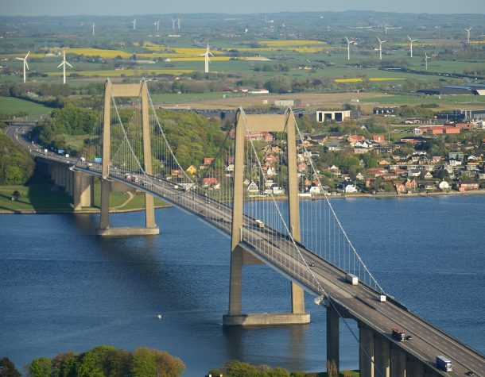

Herinde kan du læse om de formler der bliver brugt under byggelsen af en bro.

Vindstyrke beregnerNedenfor kan du indsætte værdier om en lastbils vægt samt vindstyrke af dine mål.Du vil få et svar om vindstyrken er nok til at kunne vælte en last bil med den givende vægt. |